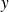
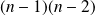

Sujet MP 2015-17 : Équations différentielles / corrigé complet
Le sujet est téléchargeable ci-dessous.
Le corrigé des questions de mathématiques est de François Sauvageot ! Merci à lui.
Dans cet exercice, on considère l'équation différentielle linéaire
On note
 l'unique solution de
l'unique solution de
 sur l'intervalle
vérifiant les conditions initiales
et
.
sur l'intervalle
vérifiant les conditions initiales
et
.
Question
1. a. Justifier l'existence de cette fonction.
Sur l'intervalle considéré, l'équation peut se récrire sous forme résolue et prend la forme d'une équation différentielle linéaire à laquelle le théorème de Cauchy-Lipschitz linéaire peut s'appliquer.
Question
1. b. En utilisant la méthode d'Euler, tracer une approximation du graphe de
sur
.
Étrange d'imposer la méthode d'Euler dans la question... Cela n'a pas vraiment d'intérêt. Je trouve que pour aller au plus rapide, j'utiliserai les modules proposés dans la synthèse sur l'analyse numérique, si je les ai à ma disposition et j'expliquerai à l'oral comment appliquer la méthode d'Euler pour une équation différentielle d'ordre 2, tout en émettant une réserve sur sa fiabilité dans le cas général.
import numpy as np
import scipy.optimize as resol
import scipy.integrate as integr
import matplotlib.pyplot as plt
Utilisation du module d'analyse numérique
est une équation différentielle scalaire d'ordre 2 de solution

. On va donc demander la résolution du système différentiel d'ordre 1 satisfait par
avec
.
Voici alors un code inspiré directement de la synthèse d'analyse numérique page 3.
def F(Y, x):
return(np.array([Y[1], Y[0] / pow(1 - x, 3)]))
X = np.arange(0, 0.9001, 0.001)
Y = integr.odeint(F, np.array([0, 1]), X)
plt.figure(1)
plt.plot(X, Y[:, 0], color = 'red')
plt.grid()
plt.show()
Méthode d'Euler
def Euler(F, Y0, X):
RES = [Y0]
for i in range(1, len(X)):
RES.append(RES[-1] + (X[i] - X[i - 1]) * F(RES[-1], X[i-1]))
return(np.array(RES))
plt.figure(2)
Xe = np.arange(0, 0.9001, 0.001)
Ye = Euler(F, np.array([0, 1]), Xe)
plt.plot(Xe, Ye[:, 0], color = 'blue')
plt.grid()
plt.show()
Question
2. a. Justifier que .
Par définition
est dans
et puisqu'on a
 , elle est de classe
sur son intervalle de définition, le membre de droite étant le produit d'une fonction de classe
et d'une fonction continue. La même expression donne, par une récurrence immédiate, le caractère
,
étant de classe
, donc
, donc etc.
, elle est de classe
sur son intervalle de définition, le membre de droite étant le produit d'une fonction de classe
et d'une fonction continue. La même expression donne, par une récurrence immédiate, le caractère
,
étant de classe
, donc
, donc etc.
Question
2. b. On pose, pour tout
Établir que la suite
vérifie une relation de récurrence liant
,
,
 et
pour tout entier
et
pour tout entier
 .
.
On effectue un développement limité de
au voisinage de 0 et on utilise que la multiplication par
est l'application
 sur les séries entières
. Pour
le terme d'ordre
sur les séries entières
. Pour
le terme d'ordre
 dans le développement limité à l'ordre
de
est unique et est donné simultanément par
et
dans le développement limité à l'ordre
de
est unique et est donné simultanément par
et
 , d'où
, d'où
 .
.
Question
2. c. Calculer alors
, pour tout
.
Question
2. d. Démontrer que pour tout , .
D'après ce qui précède le prédicat est vrai pour
. Par ailleurs, pour
,
,
et

sont positifs,
 ,
est
,
est
croissante et on a
et donc le prédicat est héréditaire. L'assertion s'ensuit.
Question
2. e. Qu'en déduit-on en ce qui concerne la fonction
?
On en déduit que la série entière
admet un rayon de convergence supérieur à
et est solution de
au voisinage de 0, de valeur nulle et de dérivée égale à 1 en 0, donc coïncide avec
sur
, par unicité dans le théorème de
. Autrement dit
est développable en série entière au voisinage de 0 avec un rayon de convergence supérieur à
 .
.
Question
3. Que peut-on dire du signe de
sur
.
Puisque
en 0 et
, on dispose de
tel que
et
 soit strictement positive sur
. D'après l'équation différentielle,
soit strictement positive sur
. D'après l'équation différentielle,
 y est aussi positive. Si
s'annulait sur
, et puisque
y est aussi positive. Si
s'annulait sur
, et puisque
 est un fermé, par continuité, on disposerait de
est un fermé, par continuité, on disposerait de
 dans
tel que
dans
tel que
 et
sur
et
sur
 . En raison de l'équation différentielle,
serait alors convexe sur ce même intervalle et croissante au voisinage de 0, donc croissante sur tout l'intervalle. En particulier
ne s'annulerait pas et ceci contredit le théorème de Rolle. Donc
est strictement positive sur
.
. En raison de l'équation différentielle,
serait alors convexe sur ce même intervalle et croissante au voisinage de 0, donc croissante sur tout l'intervalle. En particulier
ne s'annulerait pas et ceci contredit le théorème de Rolle. Donc
est strictement positive sur
.
Question
4. Démontrer que pour tout

Calculer cette dernière intégrale. Que peut-on en déduire concernant le comportement de
en
?
Sur
, puisque
est positive,
aussi, donc
est croissante et ainsi
. Par intégration on en déduit
 , puis
, puis
 et enfin, par formule de
, l'inégalité demandée s'ensuit.
et enfin, par formule de
, l'inégalité demandée s'ensuit.
Une décomposition en éléments simples donne
et donc par comparaison.